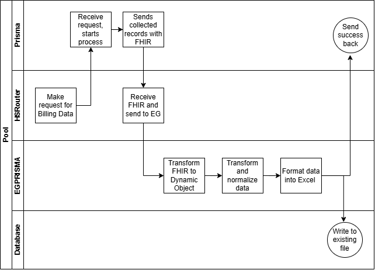

Prisma
Integration Solution Design Prisma Inbound FHIR Implementation Guide
Blue Cross Blue Shield of South Carolina
Document Controls
| Version | Date | Description of Change | Modified By |
|---|---|---|---|
| 1.0 | 04/11/2025 | Initial draft | Elise Swinehart |
| 1.1 | 04/29/2025 | Update to Markdown | Nathan Holt |
Introduction
Purpose of Document
The purpose of this Document is to outline an automation solution design for Prisma for Blue Cross Blue Shield of South Carolina. This project is a new integration that allows Prisma to support receiving facility charge details from hospitals across the country for anyone with a LOS greater than 10 days, all NICU admits, anyone with facility charges over $10k automatically via inbound FHIR.
Intended Audience
The intended audience for this document is the technical staff associated with the implementation, support and operational aspects of this solution.
Scoping Questions
- Connectivity: Are we connecting to Prisma (FHIR server/endpoint) to get resources?
- GET from Prisma? Or POST from Prisma to BCBSSC?
- How often? Or how is the transaction triggered? Schedule or event-driven.
- What is the format of the data?
- What FHIR resources?
- Bundle? (How many transactions per batch?)
- Is it a bulk transaction? > 1000
- Consider bulk FHIR
- Any expected normalization?
- Will the final file be a CSV or Excel?
- Will the file need to be sent anywhere or stored locally?
- How many records should be stored in each file?
Implementation Strategy
- Inbound FHIR connection
- Ingest Itemized Billing Data (ChargeItem Resource) message
- Transformations and Normalization
- Transformation to Spreadsheet/Columnar format
- Possible return message

Inbound FHIR Connection
For FHIR, for connections outbound (BCBSSC to external FHIR server), we would need the connection details from the provider.
STAGE: https://router.stage.sdsexchangeplatform.com/esb PROD: https://router.sdsexchangeplatform.com/esb
For connections inbound, external provider to BCBSSC, we would provide the endpoints and SSL certificate.
| Connection direction | Type | Endpoint | Authentication |
|---|---|---|---|
| Outbound | GET | /chargeitem | HTTPS: provide certificates based on exchange direction, additional OAuth or client id/secret? |
Authentication for FHIR is typically through OAuth and an identify provider. Alternatively, we can provide and maintain login credentials.
Source Data Format
<ChargeItem xmlns="http://hl7.org/fhir">
<!-- from Resource: id, meta, implicitRules, and language -->
<!-- from DomainResource: text, contained, extension, and modifierExtension -->
<identifier><!-- 0..* Identifier Business Identifier for item --></identifier>
<definitionUri value="[uri]"/><!-- 0..* Defining information about the code of this charge item -->
<definitionCanonical><!-- 0..* canonical(ChargeItemDefinition) Resource defining the code of this ChargeItem --></definitionCanonical>
<status value="[code]"/><!-- 1..1 planned | billable | not-billable | aborted | billed | entered-in-error | unknown -->
<partOf><!-- 0..* Reference(ChargeItem) Part of referenced ChargeItem --></partOf>
<code><!-- 1..1 CodeableConcept A code that identifies the charge, like a billing code --></code>
<subject><!-- 1..1 Reference(Group|Patient) Individual service was done for/to --></subject>
<encounter><!-- 0..1 Reference(Encounter) Encounter associated with this ChargeItem --></encounter>
<occurrence[x]><!-- 0..1 dateTime|Period|Timing When the charged service was applied --></occurrence[x]>
<performer> <!-- 0..* Who performed charged service -->
<function><!-- 0..1 CodeableConcept What type of performance was done --></function>
<actor><!-- 1..1 Reference(CareTeam|Device|HealthcareService|Organization|
Patient|Practitioner|PractitionerRole|RelatedPerson) Individual who was performing --></actor>
</performer>
<performingOrganization><!-- 0..1 Reference(Organization) Organization providing the charged service --></performingOrganization>
<requestingOrganization><!-- 0..1 Reference(Organization) Organization requesting the charged service --></requestingOrganization>
<costCenter><!-- 0..1 Reference(Organization) Organization that has ownership of the (potential, future) revenue --></costCenter>
<quantity><!-- 0..1 Quantity Quantity of which the charge item has been serviced --></quantity>
<bodysite><!-- 0..* CodeableConcept Anatomical location, if relevant --></bodysite>
<unitPriceComponent><!-- 0..1 MonetaryComponent Unit price overriding the associated rules --></unitPriceComponent>
<totalPriceComponent><!-- 0..1 MonetaryComponent Total price overriding the associated rules --></totalPriceComponent>
<overrideReason><!-- 0..1 CodeableConcept Reason for overriding the list price/factor --></overrideReason>
<enterer><!-- 0..1 Reference(Device|Organization|Patient|Practitioner|
PractitionerRole|RelatedPerson) Individual who was entering --></enterer>
<enteredDate value="[dateTime]"/><!-- 0..1 Date the charge item was entered -->
<reason><!-- 0..* CodeableReference(Condition|DiagnosticReport|
ImmunizationRecommendation|Observation|Procedure) Why was the charged service rendered? --></reason>
<service><!-- 0..* CodeableReference(DiagnosticReport|ImagingStudy|Immunization|
MedicationAdministration|MedicationDispense|MedicationRequest|Observation|
Procedure|ServiceRequest|SupplyDelivery) Which rendered service is being charged? --></service>
<product><!-- 0..* CodeableReference(Device|Medication|Substance) Product charged --></product>
<account><!-- 0..* Reference(Account) Account to place this charge --></account>
<note><!-- 0..* Annotation Comments made about the ChargeItem --></note>
<supportingInformation><!-- 0..* Reference(Any) Further information supporting this charge --></supportingInformation>
</ChargeItem>
Target Data Format
| identifier | definitionUri | definitionCanonical | status | partOf | code | subject | encounter | occurrence[x] | performer | function | actor | performingOrganization | requestingOrganization | costCenter | quantity | bodysite | unitPriceComponent | totalPriceComponent | overrideReason | enterer | enteredDate | reason | service | product | account | note | supportingInformation |
|---|---|---|---|---|---|---|---|---|---|---|---|---|---|---|---|---|---|---|---|---|---|---|---|---|---|---|---|
| EX1 | EX1 | EX1 | EX1 | EX1 | EX1 | EX1 | EX1 | EX1 | EX1 | EX1 | EX1 | EX1 | EX1 | EX1 | EX1 | EX1 | EX1 | EX1 | EX1 | EX1 | EX1 | EX1 | EX1 | EX1 | EX1 | EX1 | EX1 |
| EX2 | EX2 | EX2 | EX2 | EX2 | EX2 | EX2 | EX2 | EX2 | EX2 | EX2 | EX2 | EX2 | EX2 | EX2 | EX2 | EX2 | EX2 | EX2 | EX2 | EX2 | EX2 | EX2 | EX2 | EX2 | EX2 | EX2 | EX2 |
Transformation Logic
Transformation Code
Create or use existing class to represent ChargeItem.
Load data into new instance of this class.
Normalization
This is where additional transforms for normalization would be added to the ingestion process if needed.
Create new DTL's mapping ChargeItem to ChargeItem.
Save to Excel Spreadsheet
Append new row into existing spreadsheet using XLSX.writer